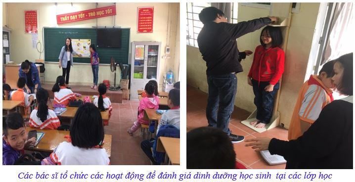
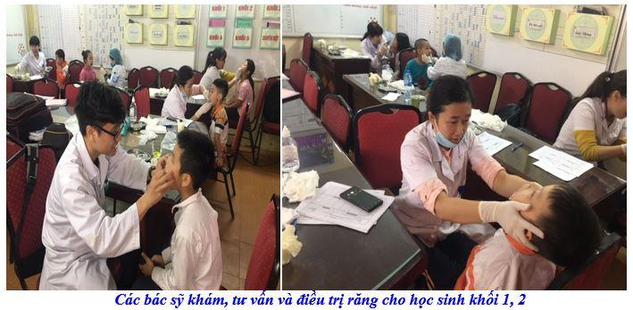
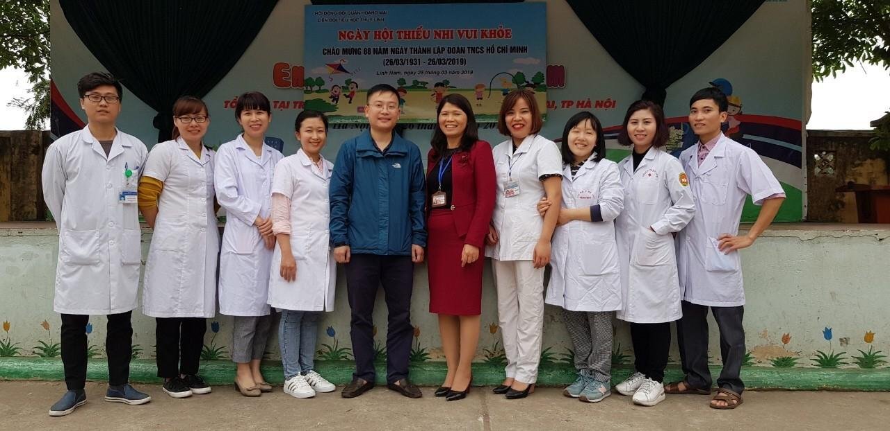

Trường Tiểu học Yên Sở làm tốt công tác truyền thông, chăm sóc sức khỏe cho học sinh
Thực hiện sự chỉ đạo của Sở GD & ĐT Hà Nội theo công văn số 1042/ SGD ĐT – CTTT ngày 26/3/2019 về phối hợp đánh giá dinh dưỡng học sinh, trường TH Thúy Lĩnh đã phối hợp với Trung tâm khảo sát bệnh tật Thành phố Hà Nội và TT y tế Hoàng Mai thực hiện khảo sát dinh dưỡng trên đối tượng học sinh lớp 5 của nhà trường. TH Thúy Lĩnh là trường duy nhất cấp Tiểu học Hoàng Mai được triển khai đề án.
Với mục đích là đảm bảo dinh dưỡng hợp lí tăng cường hoạt động thể lực cho trẻ em để nâng cao sức khỏe, dự phòng bệnh ung thư, tim mạch, đái tháo đường, bệnh phổ tắc nghẽn mãn tính và hen phế quản giai đoạn 2018- 2025.
Học sinh được khảo sát trên bài Test về sức khỏe dinh dưỡng, được cân đo và truyền thông về phòng chống bệnh. Sau khảo sát, học sinh sẽ được tư vấn về sức khỏe để tăng cường thể lực.

Song song với hoạt động truyền thông và phối hợp đánh giá dinh dưỡng, nhà trường tiếp tục phối hợp với các bác sĩ của Đại học y Hà Nội khám và điều trị răng cho học sinh lớp 1; 2. Đây là đối tượng HS trong giai đoạn thay răng sữa, đồng thời xuất hiện các vấn đề về răng miệng như: mất răng sớm, răng mọc lệch, răng mọc thưa, răng mọc ngầm, răng mọc chen chúc, sai khớp cắn do các tật mút tay, đẩy lưỡi, thở miệng… Nếu không được chăm sóc kỹ lưỡng sẽ gây ảnh hưởng không ít đến thẩm mỹ và tâm lý của các em sau này; một số trường hợp khác còn gây ảnh hưởng đến chức năng ăn nhai và một số bệnh lý về răng miệng. Trong đợt khám này, 387 em đã được các bác sĩ khám tổng quát sức khoẻ răng miệng, tư vấn hướng điều trị và hướng dẫn cách tự chăm sóc bảo vệ răng miệng. Đồng thời, mỗi em được nhận quà gồm một cặp kem và bàn chải đánh răng đạt chuẩn của hãng Colgate .
Hoạt động này đã được nhà trường phối hợp thực hiện từ năm học 2017- 2018 và thu được hiệu quả rất tích cực. Tỉ lệ sâu răng của học sinh chỉ còn tỉ lệ rất thấp so với mặt bằng chung các trường trong quận.


Ban giám hiệu,nhân viên y tế chụp hình lưu niệm với các bác sỹ Đại học Y Hà Nội
Cùng với các hoạt động chăm sóc sức khỏe thông thường, những hoạt động phối hợp cộng đồng trong việc tư vấn, truyền thông sức khỏe cho học sinh như trên luôn được BGH nhà trường quan tâm.
Với những nỗ lực của thầy cô giáo và cán bộ y tế nhà trường, trường Tiểu học Thúy Lĩnh đã có những bước phát triển mạnh mẽ trong công tác giáo dục thể chất và chăm sóc sức khỏe cho các em./.